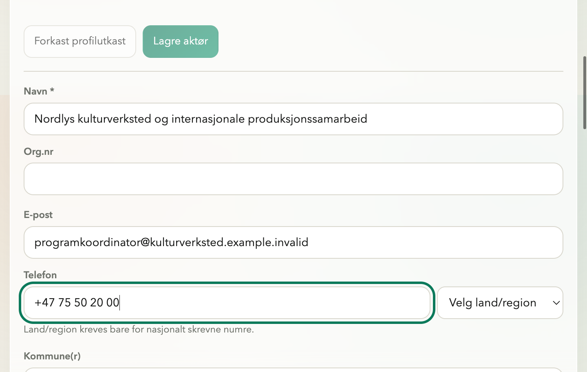
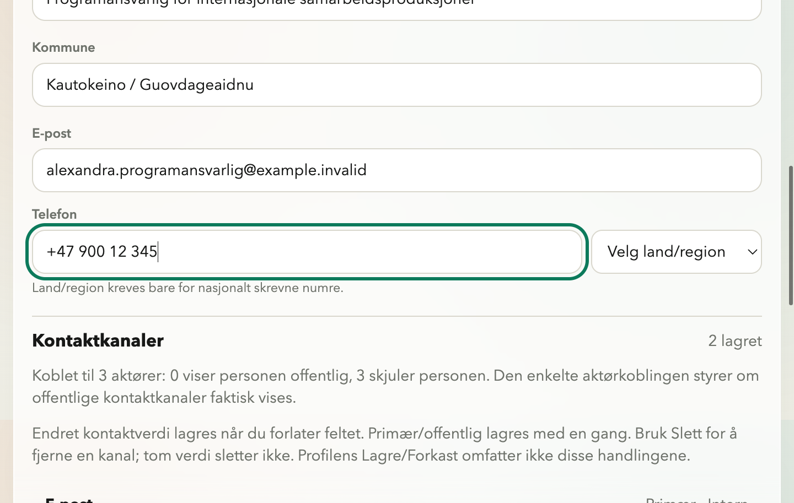
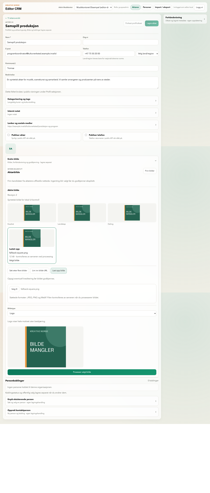

Samordnet Editor · visuell leveranse
Til visuell godkjenning før merge. Faktiske Chromium-bilder fra ekte lokal Django/PostgreSQL med syntetiske data. Ingen stagingaksept.
Runtimekode: caccd8b71f83bf3896393c5bbcb8116f2041023f · Chromium 145.0.7632.6 · laptop 1440×1000 / mobil 390×844.
Metode, tester og review · Draft PR #92. Åpne en flate; klikk bildet for full størrelse.
Aktøroversikt
Aktørens lesemodal
Rediger aktør · ren
Åpen bildeflyt
Opprett aktør
Personoversikt · inngang
Personresultater
Personens detaljvisning
Rediger person · ren
Opprett person
Aktør · endret, lagrer, lagret og feil
Endret
Lagrer · ekte PATCH pauset i transport
Lagret · faktisk backendrespons
Feil · kontrollert offline
Person · endret, lagrer, lagret og feil
Endret
Lagrer · ekte PATCH pauset i transport
Lagret · faktisk backendrespons
Feil · kontrollert offline
Faktisk 200 % zoom og bildehandling

Aktør · 200 % zoom
Person · 200 % zoom
Bilde etter ekte opplasting, prosessering og godkjenning